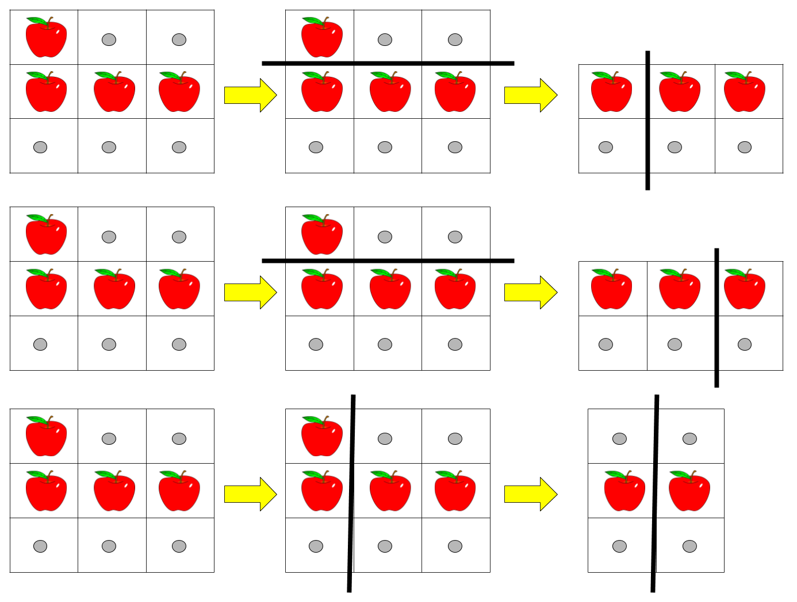

1444. 切披萨的方案数
记忆化 DFS + 二维前缀和：每次切送走上/左块，剩余块永远贴右下角，状态 (k, 左上角)，两块都须有苹果。
思路
- 二维前缀和
pre让「任意子矩阵的苹果数」O(1) 查询：apple(r1,r2,c1,c2)容斥四角。 - 关键观察：每一刀送走的是上块或左块，剩下的块永远贴着右下角——状态从 (k,r1,c1,r2,c2) 压到
(k, r, c)。 dfs(k,r,c)：当前块没苹果 → 0；k=1且有苹果 → 1；否则枚举横切位置i（上块[r,i)须有苹果）与竖切位置j，累加dfs(k-1, …)，对10^9+7取模。- 送出的块和剩下的块都要有苹果：送出前判一次，剩下的进递归时自会判。
图解
最优解
1import java.util.*;2 3class Solution {4 private static final int MOD = 1_000_000_007;5 private int[][] pre; // 二维前缀和：pre[i][j] = 左上 (0,0)~(i-1,j-1) 的苹果数6 private int[][][] memo; // memo[k][r][c]：把 (r,c)~右下角 切成 k 块的方案数7 private int rows, cols;8 9 public int ways(String[] pizza, int k) {10 rows = pizza.length;11 cols = pizza[0].length();12 pre = new int[rows + 1][cols + 1];13 for (int r = 0; r < rows; r++) {14 for (int c = 0; c < cols; c++) {15 pre[r + 1][c + 1] = pre[r][c + 1] + pre[r + 1][c] - pre[r][c]16 + (pizza[r].charAt(c) == 'A' ? 1 : 0);17 }18 }19 memo = new int[k + 1][rows][cols];20 for (int[][] layer : memo) {21 for (int[] row : layer) Arrays.fill(row, -1);22 }23 return dfs(k, 0, 0);24 }25 26 // 剩下的块永远贴着右下角，状态只要 (k, 左上角)27 private int dfs(int k, int r, int c) {28 if (apple(r, rows, c, cols) == 0) return 0; // 这块没苹果：此路不通29 if (k == 1) return 1; // 最后一块且含苹果30 if (memo[k][r][c] >= 0) return memo[k][r][c];31 long ways = 0;32 // 横切：上面 [r, i) 送人，剩下的从 (i, c) 继续33 for (int i = r + 1; i < rows; i++) {34 if (apple(r, i, c, cols) > 0) ways += dfs(k - 1, i, c);35 }36 // 竖切：左边 [c, j) 送人，剩下的从 (r, j) 继续37 for (int j = c + 1; j < cols; j++) {38 if (apple(r, rows, c, j) > 0) ways += dfs(k - 1, r, j);39 }40 return memo[k][r][c] = (int) (ways % MOD);41 }42 43 // 子矩阵 [r1, r2) × [c1, c2) 里的苹果数44 private int apple(int r1, int r2, int c1, int c2) {45 return pre[r2][c2] - pre[r1][c2] - pre[r2][c1] + pre[r1][c1];46 }47}题目
给你一个 rows x cols 大小的矩形披萨和一个整数 k ，矩形包含两种字符： 'A' （表示苹果）和 '.' （表示空白格子）。你需要切披萨 k-1 次，得到 k 块披萨并送给别人。
切披萨的每一刀，先要选择是向垂直还是水平方向切，再在矩形的边界上选一个切的位置，将披萨一分为二。如果垂直地切披萨，那么需要把左边的部分送给一个人，如果水平地切，那么需要把上面的部分送给一个人。在切完最后一刀后，需要把剩下来的一块送给最后一个人。
请你返回确保每一块披萨包含 至少 一个苹果的切披萨方案数。由于答案可能是个很大的数字，请你返回它对 10^9 + 7 取余的结果。
示例 1：

输入：pizza = ["A..","AAA","..."], k = 3 输出：3 解释：上图展示了三种切披萨的方案。注意每一块披萨都至少包含一个苹果。
示例 2：
输入：pizza = ["A..","AA.","..."], k = 3 输出：1
示例 3：
输入：pizza = ["A..","A..","..."], k = 1 输出：1
提示：
1 <= rows, cols <= 50rows == pizza.lengthcols == pizza[i].length1 <= k <= 10pizza只包含字符'A'和'.'。
题面取自力扣当前版本。
数据快照 2026-11-04。题面版权归力扣所有，本站点仅供本人学习使用，请勿对外发布。